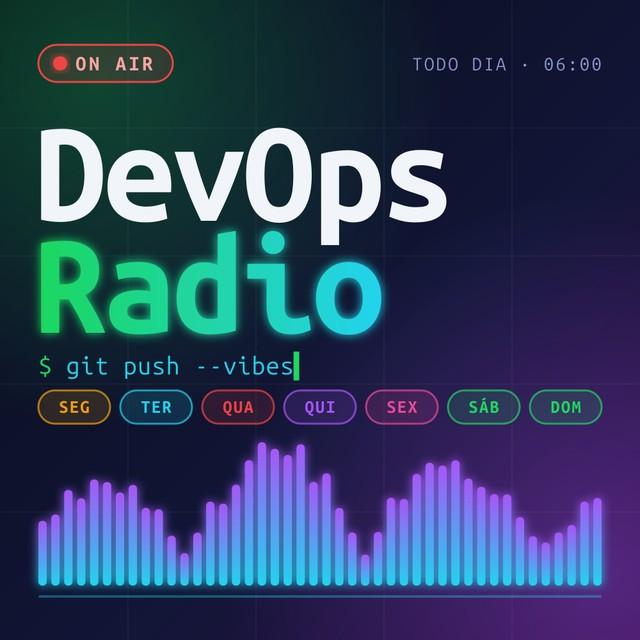

Ouvir agora
Abrir no Spotify ↗BPM ao longo da playlist
Cada ponto é uma faixa, na ordem em que tocam. Passe o mouse para ver qual é.
Faixas de hoje
| # | Faixa | BPM | Tom |
|---|

Cada ponto é uma faixa, na ordem em que tocam. Passe o mouse para ver qual é.
| # | Faixa | BPM | Tom |
|---|